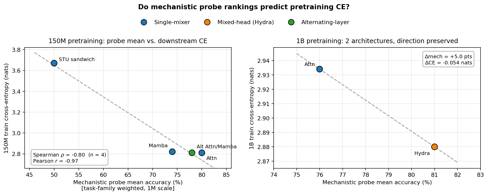
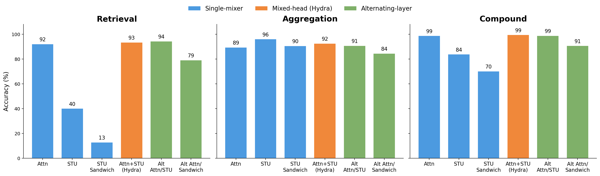
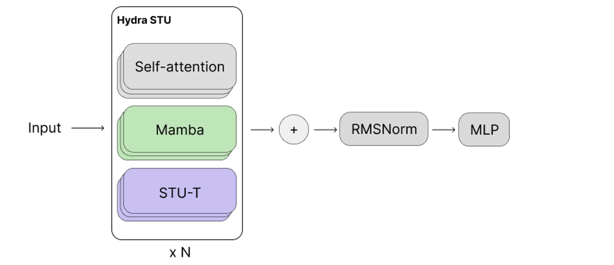
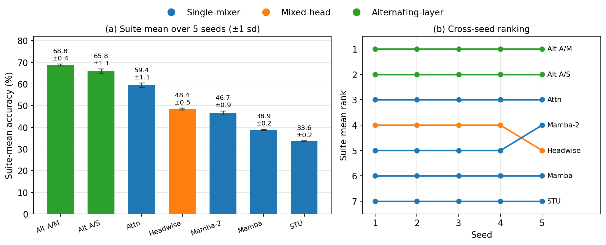

Department of Computer Science, Princeton University
*Equal contribution · Correspondence: tharun.tiruppali@gmail.com
TL;DR. A 1M-parameter sweep on synthetic mechanistic capability probes ranks dense sequence-mixer architectures the same way a 150M — or 1B — pretraining run would, so you can screen a new architecture in GPU-minutes instead of GPU-days. The per-task profile motivated Hydra, a multi-head block that matches or beats a parameter-matched 1B OLMo-2 baseline.
Comparing sequence-mixer architectures at the scale where their behavior matters (≥1B parameters) costs multiple GPU-days per run, beyond reach of most academic labs. We propose a battery of mechanistic capability probes — induction, associative recall, copy, finite-state tracking, parity, and others — as a cheap behavioral screen for dense sequence-mixer architectures, and ask whether aggregate suite accuracy predicts downstream language-model training cross-entropy. On a held-out set of four architectures at 150M parameters we find Spearman ρ = −0.80 and Pearson r = −0.97; the screen is robust to dropping any single task family, to the choice of aggregation rule, and — in a five-seed replication — to seed variation; the small-scale ranking direction is preserved at 1B on the two architectures we ran. Per-task profiles motivate Hydra, a multi-head block that places attention, STU, and Mamba mixers as parallel heads within each layer; Hydra matches or beats a parameter-matched 1B OLMo-2 attention baseline on training cross-entropy and on a majority of zero-shot benchmarks.
We train each architecture as a 1M-parameter model on every probe, take the task-family-weighted mean accuracy as a single screening score, and correlate it against the downstream language-model training cross-entropy of the same architecture scaled up. The ranking transfers: the cheap small-scale score orders architectures the way the expensive run does.

Breaking the probe suite down by primitive family shows where each architecture fails. Pure-spectral mixers (STU) collapse on retrieval while staying competitive on aggregation; attention is the opposite balance. No single mixer is best everywhere — which is exactly the opening for a hybrid.

Because the probe profile shows attention, Mamba, and STU each own a different primitive, Hydra places all three as parallel heads inside every block, so each layer can route capacity to the computation that suits it. At 1B parameters, trained on OLMo-Mix-1124, Hydra reaches a lower training cross-entropy than a parameter-matched OLMo-2 attention baseline and wins a majority of zero-shot benchmarks.


@inproceedings{tiruppalikalidoss2026mechprobes,
title = {Mechanistic Capability Probes as a Cheap Screen for
Sequence-Mixer Architectures},
author = {Tiruppali Kalidoss, Tharun Kumar and Ghods, Kia and Hazan, Elad},
booktitle = {ICML Workshop on Mechanistic Interpretability},
year = {2026}
}